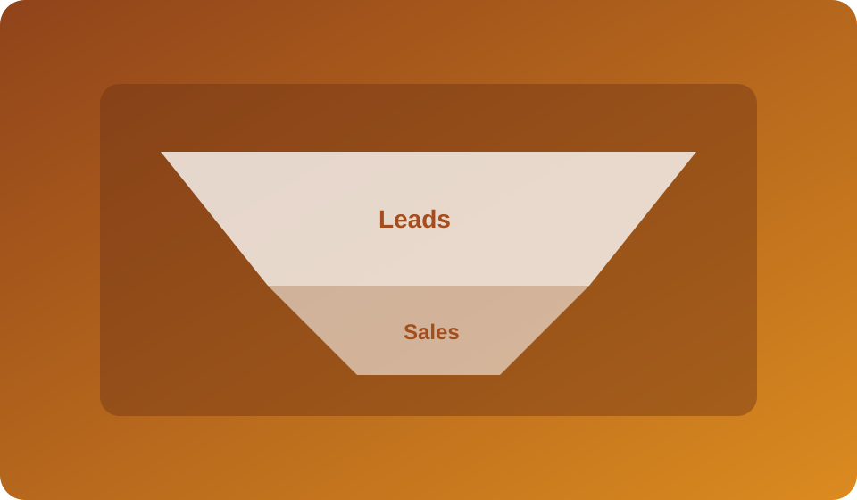
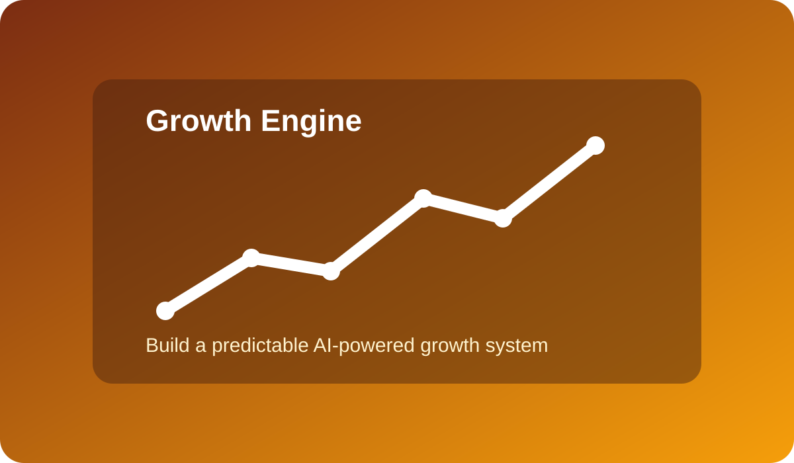
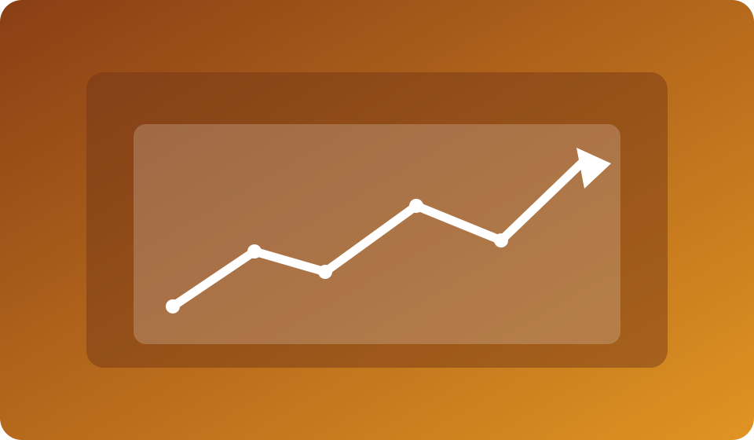

Funnel Architecture
See how awareness, nurturing, and conversion stages connect into one performance system.
Live Webinar Class
Design an AI-driven growth system from audience discovery to conversion and follow-up.


See how awareness, nurturing, and conversion stages connect into one performance system.

Track and improve growth with clear metrics, campaign loops, and AI-supported iteration.
This webinar is for founders, growth marketers, sales teams, and agency consultants. You will leave with an implementation-ready growth engine plan that connects acquisition, nurturing, and conversion in one system.